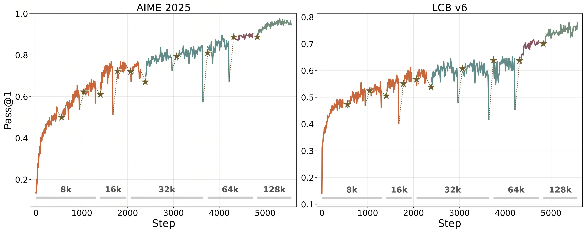
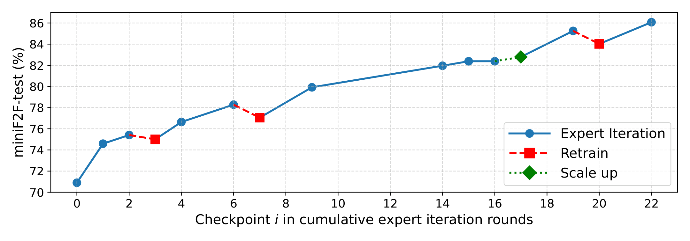
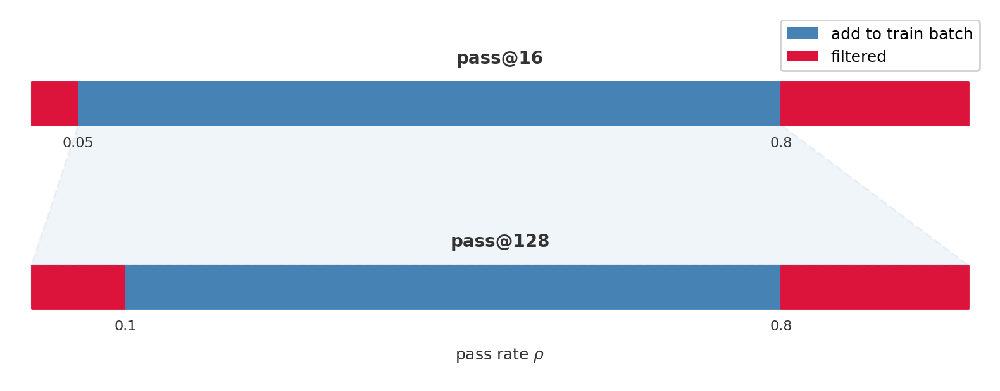
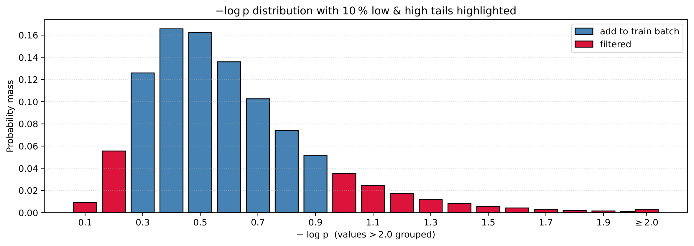

Background
In the recent MAI-Thinking-1 technical report [1], a "self-distillation" mechanism (Section 3.1.4) is introduced where they periodically pause RL, SFT on a clean checkpoint using collected rollouts, and resume training. This aligns with our approach in BFS-Prover-V2 [2]. Despite very different scales and domains, the training curves show the exact same pattern.


MAI-Thinking-1, Fig. 15 (Section 3.1.4). ⋆ = soft reset (self-distillation). Different colors = base upgrade (new pre/mid-trained model).
BFS-Prover-V2, Fig. 4 (Section 2.2). "Retrain" = soft reset (periodic retraining). "Scale up" = base upgrade (larger model).
The train-inference numerics gap
In most modern RL systems, training and inference use different kernels and parallelism strategies for different optimization priorities, which causes them to produce slightly different logits for the same input. These discrepancies compound across long rollouts and destabilize the importance-sampling correction ([1], Section 3.6.4). As a concrete example, consider the GRPO objective used in [1]:
$$J(\theta) = \mathbb{E}\left[\frac{1}{\sum_{i=1}^G |y_i|} \sum_{i=1}^G \sum_{t=1}^{|y_i|} \min\left(r_{i,t}(\theta)\, A_i,\; \text{clip}(r_{i,t}(\theta), 1{-}\epsilon, 1{+}\epsilon)\, A_i\right)\right]$$where $r_{i,t}(\theta) = \pi_\theta^{\text{train}}(y_{i,t} \mid q, y_{i,{<}t}) \,/\, \pi_{\text{old}}^{\text{inference}}(y_{i,t} \mid q, y_{i,{<}t})$. The numerator and denominator are computed by different systems, so
$$\log r_{i,t} \;=\; \log \frac{\pi_\theta^{\text{train}}}{\pi_{\text{old}}^{\text{inference}}} \;=\; \log \frac{\pi_\theta^{\text{inference}}}{\pi_{\text{old}}^{\text{inference}}} + \log \frac{\pi_\theta^{\text{train}}}{\pi_\theta^{\text{inference}}} \;=\; \underbrace{\log \frac{\pi_\theta^{\text{inference}}}{\pi_{\text{old}}^{\text{inference}}}}_{\text{policy change}} + \underbrace{\epsilon_t}_{\text{mismatch}}$$where $\epsilon_t = \log \pi_\theta^{\text{train}} - \log \pi_\theta^{\text{inference}}$.
Individual $\epsilon_t$ are small, but they accumulate over the sequence and can significantly corrupt the ratio. Normally the clip in the objective bounds the ratio to $[1-\epsilon, 1+\epsilon]$, but the GRPO objective intentionally leaves certain branches unclipped (when $A_i < 0, r > 1$ or $A_i > 0, r < 1$), allowing the policy to correct itself freely. In these branches, inflated ratios pass through unbounded and produce gradient-norm spikes. To address this, MAI
- adds an outer ratio clip ($r_{\max} = 50$) to cap $r_{i,t}$ in unclipped branches
- uses bf16 for both systems and replays MoE routing decisions to lower $|\epsilon_t|$
- replays top-$p$ masks during training (setting excluded logits to $-\infty$) so that $\pi_\theta^{\text{train}}(y_{i,t}) \approx 0$ whenever $\pi_{\text{old}}^{\text{inference}}(y_{i,t}) \approx 0$, preventing extreme ratios
But even with all of these, drift can still accumulate over long runs ([1], Section 3.6.4). A soft reset addresses this by starting from a fresh checkpoint.
Model merging is another technique that can address this and is increasingly adopted by AI labs in their post-training pipelines. Different runs from the same base accumulate drift on different tokens, so averaging their parameters cancels out run-specific corruptions.
Beyond numerical precision
BFS-Prover-V2 uses expert iteration, an offline RL algorithm that does not compute importance-sampling ratios and is therefore not affected by train-inference numerical mismatch. Yet soft resets still help. The more general failure mode is the policy settling into a local optimum in parameter space, often accompanied by entropy collapse. In BFS-Prover-V2, each soft reset causes only a small performance drop but significantly restores entropy, allowing the model to resume exploration. In addition to soft resets, MAI also addresses entropy during training with an adaptive control mechanism (Section 3.1.1), estimating policy entropy at each step:
$$\hat{H}(\pi_\theta) = \frac{1}{|T|} \sum_{(i,t) \in T} -\log \pi_\theta(y_{i,t} \mid \cdot) \cdot r_{i,t}(\theta)$$and adjusting the upper clip bound $k$ to maintain target entropy $H^\star = 0.3$:
$$k \leftarrow \text{clip}\left(k + \delta \cdot \text{sign}(H^\star - \hat{H}(\pi_\theta)),\; 0,\; k_{\max}\right)$$This helps with entropy, but parameters can still remain trapped in a basin that small gradient steps cannot escape. A soft reset jumps to a different point in parameter space entirely, which is why performance dips briefly then climbs past the previous ceiling. Model merging can also escape local optima, since independent runs settle into different basins and their average lands outside any single one.
Refresh your data
What data should the resetting SFT train on? Both MAI and BFS-Prover-V2 converge on three principles.
- Data freshness. After a long training run, much of the accumulated data was generated when the model was still weak. These early traces contain reasoning patterns the model has since outgrown, and training on them re-introduces suboptimal behaviors. MAI (Section 3.1.4) reports that self-distillation should use traces from later checkpoints, and that sampling from multiple strong checkpoints outperforms single-checkpoint sampling. In BFS-Prover-V2, the re-synthesis step achieves this by re-running the strongest model on the entire prompt set, replacing all historical trajectories with shorter, cleaner ones.
- Frontier-adaptive filtering. Not all data from the current policy is equally useful. Problems the model already solves consistently provide no learning signal. Problems with very low success rates may have faulty ground truth, or simply yield too little gradient to be useful. MAI implements this at the problem level with a two-stage pass-rate filter (Stage 1 uses $G_{\text{early}}=16$ samples with $\rho \in [0.05, 0.8]$, Stage 2 uses the full $G=128$ with $\rho \in [0.1, 0.8]$). BFS-Prover-V2 implements this at the tactic level by filtering on perplexity: trivially easy tactics (low perplexity) and noisy tactics (high perplexity) are both discarded.
- Diversity over volume. MAI reports that for a fixed token budget, prompt diversity is more valuable than trace diversity per prompt. We also had similar observations when blending RFT data in BFS-Prover-V2.


MAI-Thinking-1 (Section 3.1.3). Two-stage problem sampling with pass-rate filter $\rho \in [0.05, 0.8]$ then $\rho \in [0.1, 0.8]$.
BFS-Prover-V2, Fig. 2 (Section 2.2.1). Tactic-level perplexity filtering. Low and high tails filtered out.
For details on our approach, see the BFS-Prover-V2 paper.
References
[1] The Microsoft AI Team. MAI-Thinking-1: Building a Hill-Climbing Machine. Technical Report, 2026.
[2] Xin*, R., Zheng*, Z., Nie*, Y., Yuan, K., Xiao, X. BFS-Prover-V2: Scaling up Multi-Turn Off-Policy RL and Multi-Agent Tree Search for LLM Step-Provers. ICML 2026.